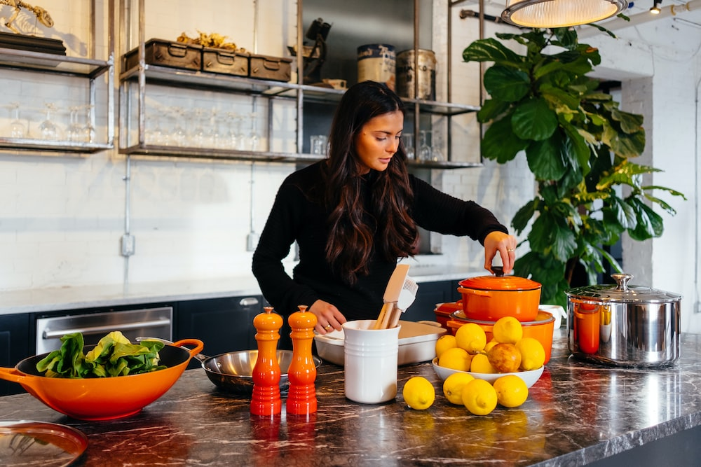
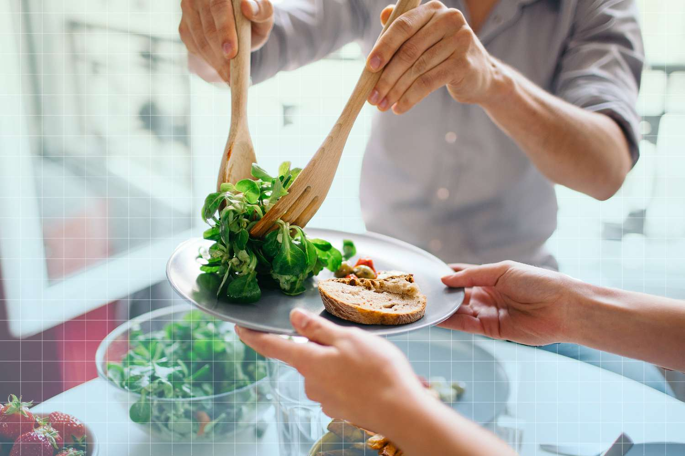

Curso de nutrição e dietetica
A introdução de um curso de culinária de nutrição e dietética é uma oportunidade empolgante para explorar a interseção entre alimentação saudável e prazer culinário. Este curso oferece uma jornada única que combina o conhecimento nutricional sólido com as habilidades práticas da culinária, visando capacitar os participantes a tomar decisões alimentares informadas e preparar refeições deliciosas que promovam a saúde e o bem-estar.
Nos próximos módulos deste curso, você será imerso em um mundo de sabores, ingredientes frescos e técnicas culinárias que não apenas satisfazem o paladar, mas também promovem uma vida saudável. Nossos instrutores especializados irão guiá-lo através de aulas teóricas e práticas, explorando os fundamentos da nutrição, os benefícios de diferentes grupos de alimentos e estratégias para criar refeições balanceadas.
Entenderemos como escolher os melhores ingredientes, adaptar receitas tradicionais para torná-las mais saudáveis e, o mais importante, como incorporar essas escolhas alimentares saudáveis em sua vida cotidiana. Afinal, a nutrição não deve ser um conjunto de regras rígidas, mas sim uma abordagem flexível e consciente para alimentar seu corpo da melhor maneira possível.
Ao longo deste curso, você aprenderá a fazer escolhas alimentares inteligentes que se alinham com seus objetivos de saúde e estilo de vida. Ao mesmo tempo, aprofundará suas habilidades culinárias, tornando-se um cozinheiro mais confiante e criativo. Afinal, a comida saudável não precisa ser monótona; ela pode ser uma celebração da diversidade de sabores e texturas que o mundo tem a oferecer.
Estamos entusiasmados para embarcar nesta jornada de descoberta culinária e nutricional com você. Prepare-se para explorar os segredos da cozinha saudável e aprender a transformar ingredientes frescos em pratos deliciosos que nutrem o corpo e a alma. Vamos começar!

